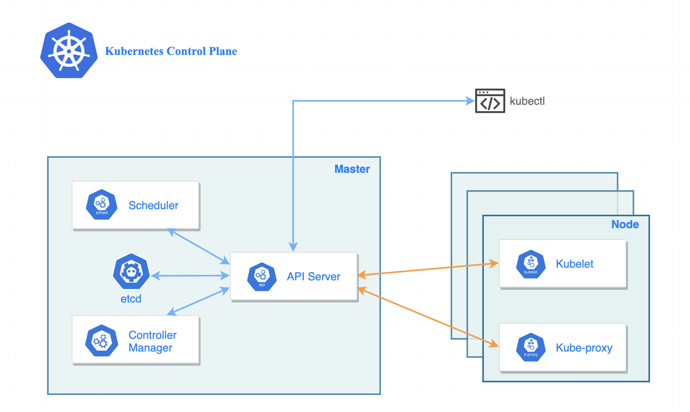

Control Plane#
Control Plane (управляющий слой) Kubernetes — это набор сервисов и компонентов, которые управляют всем кластером. Он обычно располагается на одном или нескольких специальных узлах, называемых мастер-узлами (control plane nodes). Эти узлы могут быть отдельными физическими или виртуальными серверами, выделенными только для управления кластером.1 2 4
Основные компоненты Control Plane#

API Server — точка входа для всех запросов к кластеру, через нее происходит взаимодействие с Kubernetes (например, через kubectl).7 1
Scheduler — распределяет поды по рабочим узлам на основе ресурсов и правил.2 4
Controller Manager — следит за состоянием кластера и обеспечивает нужное число подов, обновления, масштабирование и т.д.. 4 2
etcd — распределённое key-value хранилище, где хранится текущая конфигурация и состояние кластера.2 4
Где физически находится Control Plane#
В типичном кластере Kubernetes Control Plane развёрнут на одном или нескольких узлах, которые не запускают рабочие нагрузки (поды приложений). Они отвечают исключительно за управление и координацию кластера.1 4
Для обеспечения отказоустойчивости Control Plane обычно развёртывают на нескольких узлах, чтобы при сбое одного узла управление переходило к другому.3 6
Пример реальной системы Kubernetes с Control Plane#
Компоненты |
Описание |
Расположение |
|---|---|---|
Control Plane Nodes |
Узлы с API Server, Scheduler, Controller Manager, etcd |
Выделенные серверы (физические или ВМ) |
Worker Nodes (Рабочие узлы) |
Узлы, на которых запускаются поды с контейнерами приложений |
Физические или виртуальные серверы |
Поды (Pods) |
Минимальная единица запуска — один или несколько контейнеров |
Запускаются на рабочих узлах |
Services |
Абстракция для связи подов, обеспечивающая стабильный IP |
Работают поверх рабочих узлов |
Пример создания кластера с несколькими Control Plane нодами:
kind: Cluster
apiVersion: kind.x-k8s.io/v1alpha4
nodes:
- role: control-plane
- role: control-plane
- role: worker
Здесь два узла отвечают за Control Plane, обеспечивая высокую доступность, а один — за запуск приложений.
Итог: Control Plane — это центральная управляющая часть Kubernetes, обычно развёрнутая на выделенных узлах или серверах, которая координирует работу всего кластера, в то время как сами приложения запускаются на рабочих узлах, распределённых по инфраструктуре.3 4 1 2